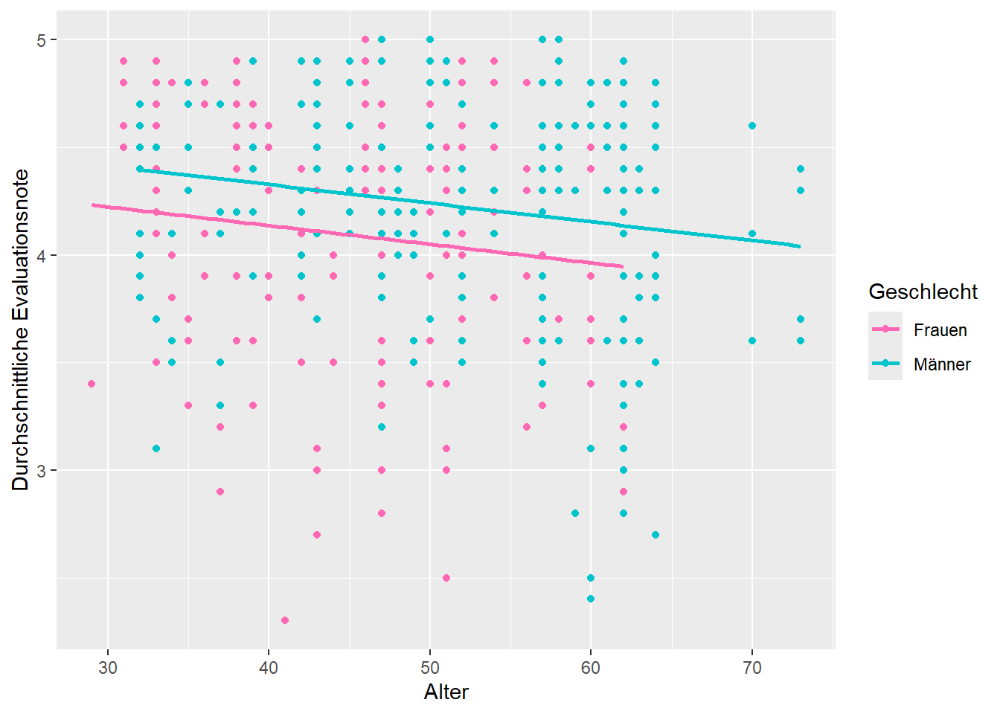
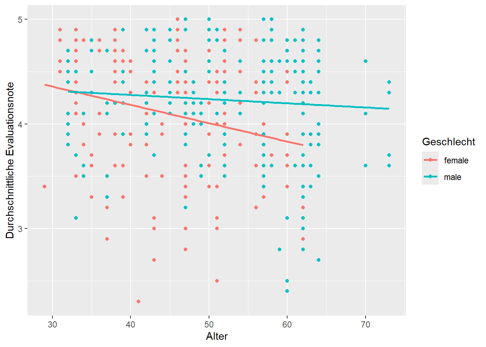

#Pakete installieren
#install.packages("tidyverse")
#install.packages("moderndive")
#install.packages("skimr")
#install.packages("gapminder")
#install.packages("moments")
#install.packages("stargazer")
# Pakete laden
library(tidyverse)
library(moderndive)
library(skimr)
library(gapminder)
library(moments)
library(stargazer)Übung mit R - Fallstudie 2: Zusammenhang zwischen Evaluationsnote, Alter und Gender
Pakete installieren und laden
Bevor mit R arbeiten können, müssen wir wieder die Pakete laden, die wir für die weitere Arbeit benötigen.
Der Zusammenhang von Evaluationsnote und Geschlecht
Wir wollen im Nachgang an Fallstudie 1 als weitere Variable das Geschlecht hinzunehmen, um zu untersuchen, ob die Evaluationsnote vom (binären) Geschlecht der Lehrperson abhängt. Dazu sehen wir uns zunächst an, wie das Geschlecht verteilt ist und ob sich die durchschnittliche Note für Männer und Frauen unterscheidet. Dazu analysieren wir die Verteilungsparamter für die Evaluationsnote für Männer und Frauen getrennt.
evals_neu <- evals %>%
select(ID, score, age, bty_avg, gender)
evals_neu %>%
group_by(gender) %>%
summarize(
mean = mean(score, na.rm = TRUE), # Mean
sd = sd(score, na.rm=TRUE), #Standardabweichung
min = min(score, na.rm = TRUE), # Min
max = max(score, na.rm = TRUE), # Max
N=n() # N
) %>%
knitr::kable()| gender | mean | sd | min | max | N |
|---|---|---|---|---|---|
| female | 4.092821 | 0.5638141 | 2.3 | 5 | 195 |
| male | 4.234328 | 0.5218958 | 2.4 | 5 | 268 |
Note
Aufgabe 1
Interpretieren Sie die oben berechneten Parameter. Was lernen wir über den Zusammenhang von Evaluationsnote und Geschlecht?
Lösung:
Im nächsten Schritt wollen wir uns die Zusammenhänge mittels linearer Regression anschauen. Dazu modellieren wir zuerst noch einmal den Einfluss von Alter und Geschlecht auf die Evaluationsnote in getrennten Modellen.
Die Schätzgleichung für den Zusammenhang von Alter und Evaluationsnote lautet:
Modell 1: \(\hat{y}=\widehat{score}=\hat{\beta_0} + \hat{\beta}_{Alter} * Alter\)
Die zugehörige Schätzung in R setzen wir folgendermaßen um:
model_1 <- lm(score ~ age, data=evals_neu)
get_regression_table(model_1)# A tibble: 2 × 7
term estimate std_error statistic p_value lower_ci upper_ci
<chr> <dbl> <dbl> <dbl> <dbl> <dbl> <dbl>
1 intercept 4.46 0.127 35.2 0 4.21 4.71
2 age -0.006 0.003 -2.31 0.021 -0.011 -0.001Die Schätzgleichung für den Zusammenhang von Geschlecht und Evaluationsnote lautet:
Modell 2: \(\hat{y}=\widehat{score}=\hat{\beta_0} + \hat{\beta}_{männl} * I_{istmännlich}\)
Die zugehörige Schätzung in R setzen wir folgendermaßen um:
model_2 <- lm(score ~ gender, data=evals_neu)
get_regression_table(model_2)# A tibble: 2 × 7
term estimate std_error statistic p_value lower_ci upper_ci
<chr> <dbl> <dbl> <dbl> <dbl> <dbl> <dbl>
1 intercept 4.09 0.039 106. 0 4.02 4.17
2 gender: male 0.142 0.051 2.78 0.006 0.042 0.241
Note
Aufgabe 2
Interpretieren Sie die oben berechneten Parameter. Was lernen wir jeweils über den Zusammenhang von Evaluationsnote und Alter bzw. Geschlecht?
Lösung:
Der gemeinsame Zusammenhang von Geschlecht und Alter auf die Evaluationsnote
Wir möchten nun alle drei Variablen gemeinsam modellieren. Dies ermöglicht es, den Zusammenhang von Alter und Evaluationsnote unter Berücksichtigung eines bestimmten Geschlechts sowie den Zusammenhang von Geschlecht und Evaluationsnote bei einem bestimmten Alter zu schätzen. Die dabei ermittelten Koeffizienten interpretieren wir ceteris paribus. Ceteris paribus heißt: “unter sonst gleichen Umständen”.
Um diese Zusammenhänge zu analysieren, verwenden wir eine multiple Regression, bei der beide erklärenden Variablen gleichzeitig einfließen. Zusammengefasst sind die betrachteten Variablen:
die Evaluationsnote als numerische Ergebnisvariable \(y\) bzw. \(score\)
das Alter der Lehrperson als numerische erklärende Variable \(x_1\) bzw. \(Alter\)
das (binäre) Geschlecht der Lehrperson als nominal skalierte (kategoriale) erklärende Variable \(x_2\) bzw. \(I_{istmännlich}\).
Das Modell hat damit die Form
Modell 3: \(\hat{y}=\widehat{score}=\hat{\beta_0} + \hat{\beta}_{Alter} * Alter +\hat{\beta}_{männl} * I_{istmännlich}\).
Grafisch können wir diesen Zusammenhang folgendermaßen darstellen:
ggplot(evals_neu, aes(x = age, y = score, color = gender)) +
geom_point() +
labs(x = "Alter", y = "Durchschnittliche Evaluationsnote", color = "Geschlecht") +
scale_color_manual(
values = c("female" = "hotpink", "male" = "turquoise3"), # Farben für Kategorien
labels = c("female" = "Frauen", "male" = "Männer") # Beschriftungen der Legende
) +
geom_parallel_slopes(se = FALSE)
Die Grafik zeigt, dass Männer unabhängig vom Alter im Durchschnitt eine höhere Evaluationsnote erzielen. Dies wird durch die nach oben verschobene Regressionsgerade für Männer deutlich. Der Abstand zwischen den beiden Geraden repräsentiert den durchschnittlichen Unterschied in der Evaluationsnote zwischen den Geschlechtern. Den genauen Wert dieses Unterschieds können wir der zugehörigen Regressionsgleichung entnehmen.
model_3 <- lm(score ~ age + gender, data=evals_neu)
get_regression_table(model_3)# A tibble: 3 × 7
term estimate std_error statistic p_value lower_ci upper_ci
<chr> <dbl> <dbl> <dbl> <dbl> <dbl> <dbl>
1 intercept 4.48 0.125 35.8 0 4.24 4.73
2 age -0.009 0.003 -3.28 0.001 -0.014 -0.003
3 gender: male 0.191 0.052 3.63 0 0.087 0.294Die durchschnittliche Note für Männer liegt 0,191 Punkte höher als die für weibliche Lehrpersonen, unabhängig vom Alter. Dieser Unterschied entspricht dem Abstand zwischen den beiden Regressionsgeraden. Der Einfluss des Alters auf die Evaluationsnote ist in diesem Beispiel für beide Geschlechter identisch (-0,009). Das bedeutet, dass die Evaluationsnote ceteris paribus mit jedem zusätzlichen Lebensjahr einer Person durchschnittlich um 0,009 Punkte sinkt.
Note
Aufgabe 3
Basierend auf dem Modell oben:
Wie lässt sich die durchschnittliche Evaluationsnote von Frauen in Abhängigkeit vom Alter berechnen?
Wie lässt sich die durchschnittliche Evaluationsnote von Männern in Abhängigkeit vom Alter berechnen?
Eine weitere interessante Frage ist, ob geschlechtsspezifische Unterschiede im Zusammenhang von Note und Alter bestehen. Mit anderen Worten: Interagieren die Variablen Alter und Geschlecht miteinander? Wenn wir zulassen, dass die Regressionsgeraden für Männer und Frauen separat optimiert werden – wie es bei getrennten Schätzungen der Fall wäre – ergibt sich folgendes Bild:
ggplot(evals_neu, aes(x = age, y = score, color = gender)) +
geom_point() +
labs(x = "Alter", y = "Durchschnittliche Evaluationsnote", color = "Geschlecht") +
geom_smooth(method = "lm", se = FALSE)`geom_smooth()` using formula = 'y ~ x'
Die Regressionsgeraden für Männer und Frauen zeigen deutlich unterschiedliche Steigungen. Die Gerade für Frauen ist deutlich steiler, was auf einen stärkeren negativen Zusammenhang zwischen Alter und Evaluationsnote bei Frauen im Vergleich zu Männern hinweist. Dies bedeutet, dass Frauen mit zunehmendem Alter eine stärkere „Bestrafung“ in ihrer Evaluationsnote erfahren als ihre männlichen Kollegen.
Um diesen Zusammenhang genauer zu quantifizieren, benötigen wir ein erweitertes Regressionsmodell mit einem Interaktionsterm:
Modell 4: \(\hat{y}=\widehat{score}=\hat{\beta}_0 + \hat{\beta}_{Alter} * Alter +\hat{\beta}_{männl} * I_{istmännlich} + \hat{\beta}_{Alter,I_{istmännlich}} * Alter* I_{istmännlich}\).
model_4 <- lm(score ~ age * gender, data=evals_neu)
get_regression_table(model_4)# A tibble: 4 × 7
term estimate std_error statistic p_value lower_ci upper_ci
<chr> <dbl> <dbl> <dbl> <dbl> <dbl> <dbl>
1 intercept 4.88 0.205 23.8 0 4.48 5.29
2 age -0.018 0.004 -3.92 0 -0.026 -0.009
3 gender: male -0.446 0.265 -1.68 0.094 -0.968 0.076
4 age:gendermale 0.014 0.006 2.45 0.015 0.003 0.024Bei der Interpretation der Koeffizienten im Interkationsmodell müssen wir vorsichtig sein. Aufgrund des Interaktionsterms \(Alter* I_{istmännlich}\) ändert sich die Interpretation aller Koeffizienten:
\(\hat{\beta}_0\):
\(\hat{\beta}_{Alter}\):
\(\hat{\beta}_{männl}\):
\(\hat{\beta}_{Alter, I_{istmännlich}}\):
Note
Aufgabe 4
Wie lässt sich die durchschnittliche Evaluationsnote von Frauen in Abhängigkeit vom Alter berechnen?
Wie lässt sich die durchschnittliche Evaluationsnote von Männern in Abhängigkeit vom Alter berechnen?
Untersuchen Sie den Zusammenhang zwischen Evaluationsnote und Status einer Lehrperson (Variable
rank):
Berechnen Sie statistische Parameter für die Verteilung der Variable
rank, inklusive dem passenden Korrelationskoeffizienten.Visualisieren Sie den Zusammenhang von Evaluationsnote und Status einer Lehrperson.
Schätzen Sie ein einfaches lineares Regressionsmodel für den Zusammenhang von Evaluationsnote und Status. Welchen Zusammenhang gibt es?
Lösung:
Bemerkung:
Diese Fallstudie basiert auf dem Buch "Statistical Inference via Data Science - A ModernDive into R and the Tidyverse" von Chester Ismay und Altert Y. Kim (https://moderndive.com/). Das Werk ist lizensiert unter CC BY-NC-SA 4.0.
Diese Fallstudie ist lizensiert unter BY-SA 4.0 von Christine Dauth.